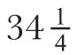

中文
中文O. W. Richardson
Editor’s Note
There were, in classical physics, no “magnetic charges”—no isolated magnetic poles without their complementary pole. But Paul Dirac suggested that quantum theory might allow the existence of such “monopoles”, and here distinguished British physicist Owen Willans Richardson speculates on what their existence might entail for physics. While science focused on atoms made of electrically charged particles, a similar hierarchy of magnetic atoms might exist. Richardson argues that their properties would be unusual; in particular, the frequencies of their spectral lines would be some 1010 higher than for “ordinary” matter. Dirac had speculated that the forces between magnetic monopoles would prevent their separation in ordinary circumstances, but Richardson suggests this might happen for cosmic rays of extremely high energy. 中文
IN the last number of the Proceedings of the Royal Society, Dirac has come to the conclusion that the quantum theory requires the existence of discrete magnetic poles of a strength equal to 137÷2 times the electronic charge. If such objects were common one might expect the universe to be a good deal different from what experimenters have found it to be, so far. 中文
There seems no a priori reason why the whole theory of atom building which has been built up for electrons and nuclei—an electrostatic problem apart from details—should not be carried over bodily into the corresponding magneto-static problem of the attractions of the oppositely charged poles. In this way we might, at first, expect to get a set of “magnetic” atoms, similar to the electric atoms of which matter is generally supposed to be built up. These atoms would be a good deal different from those we think we are familiar with. How much different depends to some extent on what the mass of a magnetic pole is. The quantum theory does not tell this, but I think its value, if it exists, can be fixed by an argument based on classical ideas at about 500 times that of the corresponding electronic object. Following this general line of argument, the dimensions of these magnetic atoms come out at 10–14 cm. to 10–15 cm. compared with 10–7 cm. to 10–8 cm. for the atoms of the periodic table. The frequencies of the “spectral” lines emitted by these magnetically constructed atoms would run about 1010 times those of the corresponding lines of the electronic spectra; for example, the first line of the Lyman series would be raised from v=2.5×1015 to v=3.1×1025 sec.–1 if the corresponding states are capable of existence. Even if quite large changes are made in the mass of the magnetic poles, which is the doubtful element, the corresponding numbers will still remain quite wide apart. 中文
Dirac has suggested that the reason these magnetic poles have not been observed may be that the forces between them are so much larger than those between electrons and protons that they cannot be separated. There is reason for believing they could not get together to the extent indicated by the preceding numbers. The number of kinds of atoms with azimuthal quantum number 1 which can be formed from these magnetic units is much less than unity. This follows from Dirac’s formula for the spectral terms for hydrogen, or alternatively, from the principle of minimum time. This may be forcing the required atoms too much into the pattern of those with which we are familiar. In any event, no atom with azimuthal quantum number less than

can be made out of these elements. Otherwise the time factors in the wave functions involve real exponentials and become infinite with lapse of time. However, even with such high quantum numbers the forces would still be enormous compared with those in corresponding electronic structures and the frequencies would still be quite high. 中文
There may be an application of these products of the quantum theory in the field of “ultra-penetrating” radiations. I have no first-hand knowledge of the process of creation, but I should suspect it would be relatively difficult to create objects with the intrinsic energy of these magnetic poles. It seems likely, therefore, that their abundance would be very small compared with that of electrons and protons, but there might be enough in the universe to account for such ultra-penetrating radiations as are not capable of being accounted for otherwise. The possible existence of such isolated magnetic poles, with properties so very different from those of electrons and protons, obviously changes the basis for discussion of a good many cosmological questions. 中文
(128, 582; 1931)
O. W. Richardson: King’s College, London, W.C.2, Sept. 18.